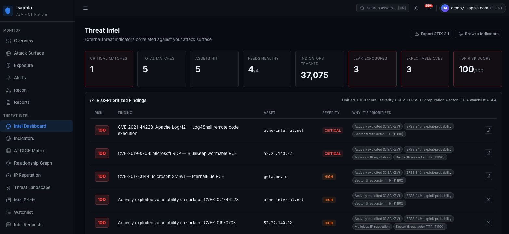
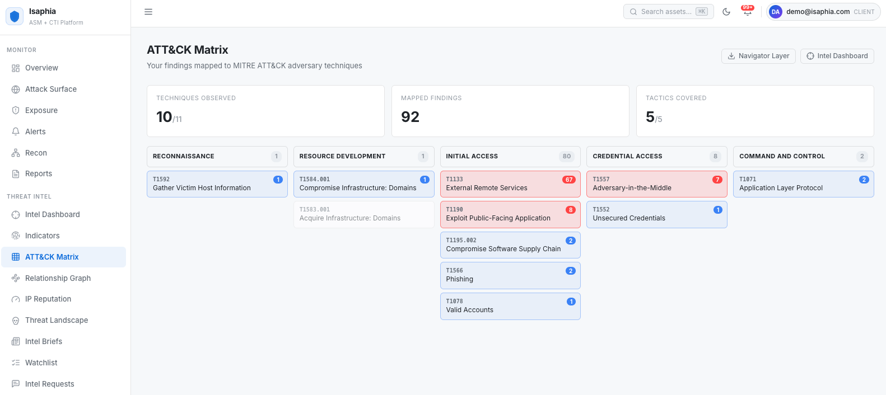
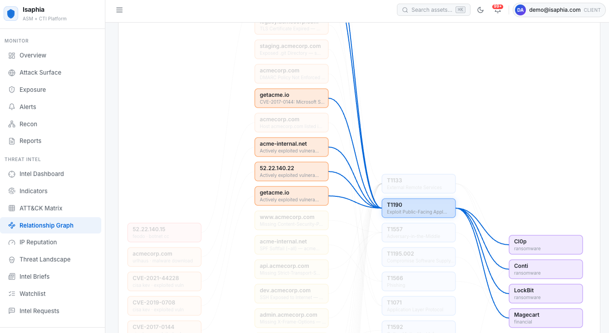
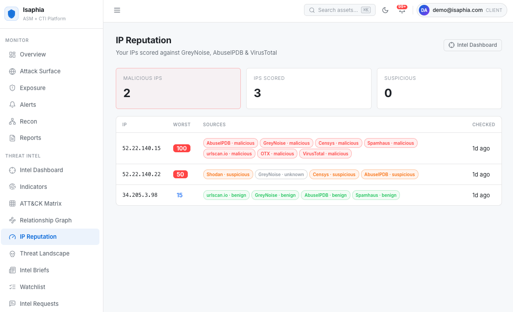
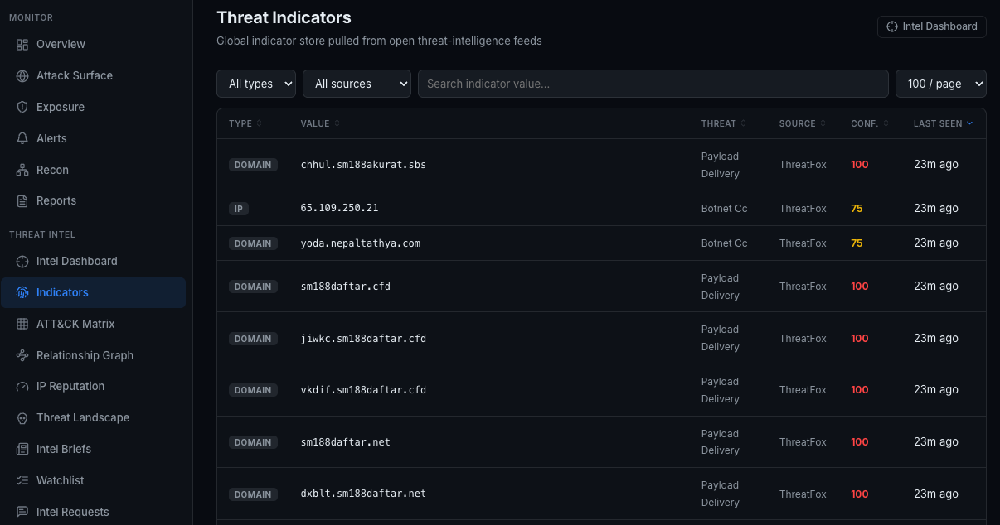
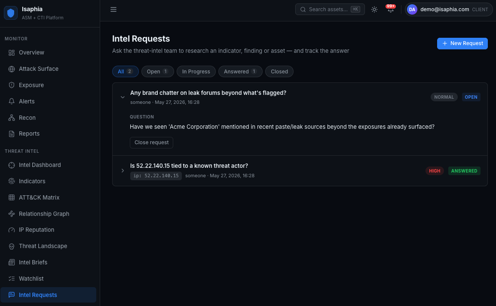

Threat intelligence that knows your attack surface.
Isaphia CTI ingests global threat feeds, your own IOCs, and dark-web exposure signals — then correlates every indicator against your continuously-discovered surface. Your team sees the dozen findings that matter today instead of triaging fifty thousand IOCs a week.
Request a DemoMost threat intelligence wasn't built for your environment
A weekly torrent of indicators. No way to tell which ones touch your assets. Analyst time burned on noise.
Enterprise CTI platforms ship hundreds of thousands of indicators a month, but treat your environment as an afterthought. Isaphia CTI inverts that. Every signal — malicious IP, exploited CVE, leaked credential, adversary technique — is matched against the live asset inventory continuously discovered by Isaphia ASM. What you see on screen is the intersection: real threats, against real assets you own, right now.
In plain terms: CTI is the threat-intelligence module of Helios by Isaphia. It runs in the same cloud (SaaS) dashboard as the other Helios modules — log in from any web browser, with nothing to install. You can run it yourself, or have our analysts triage findings and ship monthly intel briefs on your behalf.
What Isaphia CTI Covers
One platform. Seventeen capabilities. Threat intelligence and attack-surface context, unified.
Actively-exploited CVEs mapped directly to your discovered surface.
Real-world exploit probability per CVE — fed into the Unified Risk Score.
Botnet C2, malware URLs, and malicious infrastructure from curated open feeds.
Multi-source consensus scoring (GreyNoise, AbuseIPDB, VirusTotal, Spamhaus, Censys and more).
Findings auto-tagged with technique IDs across all 14 tactics. Navigator layer export.
Sector-relevant APTs scored by live TTP overlap against your environment.
Your own IOCs, brand keywords, and executive terms — monitored continuously.
Domain and email exposure across paste sites and known leak sources.
Seven-signal blend (0–100) ranks every finding so triage has one queue, not seven.
Daily, weekly, or monthly markdown reports generated per organization.
Indicator → Finding → Technique → Actor visualization for kill-chain investigation.
Org-scoped question / answer threads with suppression and false-positive triage.
Push high-confidence IOCs to firewall and EDR feeds via authenticated External Dynamic List.
Per-feed cadence scheduler — intelligence collection decoupled from asset scans.
Inbound and outbound peer / ISAC indicator exchange. STIX 2.1 bundle export.
TIP-style analyst browser with full-text filter, sort, and pivot across millions of IOCs.
Save any analyst pivot as a named hunt. When a new indicator matches your query, the platform alerts your team automatically — no dashboards to babysit.
See It in Action
The same dashboard your team uses every day — built so analysts can answer questions, not just look at charts.

Threat Intel Dashboard. Risk-prioritized findings across your assets — KEV-exploited CVEs, malicious IP hits, and high-confidence indicators ranked by Unified Risk Score, not feed volume.

Findings auto-mapped to the techniques attackers actually use against you — with Navigator JSON export for your SOC.

Pivot the full kill chain from a suspicious IP to the ransomware crews known to use it.

Eight reputation sources, one consensus score per IP — malicious, suspicious, benign tiers at a glance.

A TIP-style browser of the global indicator corpus — filter, sort, and pivot to enrichment in one click.

Ask the threat-intel team a question against a real indicator — and track the answer to close.
How It Works
Continuous collection, contextual correlation, and routes to wherever your team already works.
Per-feed cadence schedulers pull from CISA KEV, EPSS, abuse.ch, IP-reputation sources, paste / leak monitors, and any TAXII 2.1 server you peer with. Bring your own IOCs by paste, JSON, CSV, or STIX 2.1.
Every indicator is matched against the live asset inventory continuously discovered by Isaphia ASM. What you see is the intersection — global threat × your actual environment.
A seven-signal blend (KEV status, EPSS, source confidence, asset exposure, ATT&CK tactic, watchlist match, recency) ranks every finding 0–100 — so triage has one queue, not seven.
Findings push to Splunk HEC, Elastic, CEF-based SIEMs, Jira, ServiceNow, Slack, Teams, and webhooks. High-confidence IOCs export as an authenticated EDL feed for firewalls and EDR.
Two Ways to Run It
Same platform, same coverage — choose how much you want to operate yourself.
Run it yourself
Direct dashboard access for your team. Configure feeds, watchlists, recipients, and schedules. Full RBAC and unlimited users. Ideal for in-house security teams with at least one analyst.
We watch for you
Our analysts triage every finding and only escalate what matters. Monthly executive intel briefings, direct line to threat analysts, and quarterly business reviews. Ideal for organizations without a dedicated CTI function.
Built to Fit Your Stack
Intelligence goes where your team already works — no parallel inbox to babysit.
Standards, Reliability & Security Posture
Built to the standards your security and procurement teams will ask about.
Standards Conformance
- STIX 2.1 — server + client, bundle export
- TAXII 2.1 — discovery, API root, collections
- MITRE ATT&CK v14 — technique-level mapping
- CVSS 3.1 + EPSS — exploit-prediction scoring
- JWT (RFC 7519) — short-lived access tokens + refresh for API auth
Reliability & Infrastructure
- Managed cloud database — 99.95% SLA, daily encrypted backups, point-in-time recovery
- Cloud compute — 99.99% network-uptime SLA
- VPC-private database connectivity — no public database exposure
- Canadian data residency — Toronto; EU/US on request
- 30-day default backup retention
Security & Data Handling
- TLS 1.3 in transit
- AES-256 at rest
- Hard multi-tenant isolation enforced at the database query layer
- Non-root service posture — services run as a dedicated unprivileged user with mode-600 secrets
- Append-only audit log with admin-readable audit-log API
- Responsible disclosure: security@isaphia.com
Frequently Asked Questions
Plain-English answers to the questions we hear most often.
What is Isaphia CTI, in plain English?
Isaphia CTI is a cloud-based threat intelligence platform. It collects global signals about attackers — malicious IPs, malware infrastructure, leaked credentials, exploit chatter — and matches them against the assets you actually own. Instead of tens of thousands of generic indicators, your team sees the small set that maps to your real surface today.
How is Isaphia CTI different from Isaphia ASM?
Isaphia ASM tells you what you have exposed. Isaphia CTI tells you who is targeting things like it, what they use, and which of those things touch your environment right now. CTI is built on top of ASM and reuses your discovered asset inventory — that's what makes it asset-aware.
Can I buy CTI without ASM?
ASM is bundled into every CTI tier because the asset correlation is what makes the intelligence actionable. You do not need to be an existing ASM customer — both modules are provisioned together.
What threat feeds are included?
CISA KEV (known-exploited vulnerabilities), EPSS exploit-prediction scoring, global IOC feeds (botnet C2, malware URLs, malicious infrastructure), multi-source IP reputation, MITRE ATT&CK technique mapping, sector-relevant threat-actor profiles, and paste / leak monitoring. You can also bring your own indicators or subscribe to feeds via TAXII 2.1.
Do I need a CTI analyst to get value from it?
No. The Self-Service tier is designed for security teams without a dedicated CTI function — findings are pre-prioritized and routed to your existing inbox (email, Slack, Teams, SIEM, ticketing). If you would rather not run it at all, the Managed Service has Isaphia analysts triage every finding and ship monthly intelligence briefs.
Can my SOC or SIEM consume the intelligence?
Yes. High-confidence indicators export as an authenticated External Dynamic List (EDL) feed for firewalls and EDR, as STIX 2.1 bundles, and over a TAXII 2.1 server. Findings also push into Splunk HEC, Elastic / OpenSearch, and CEF-compatible SIEMs (QRadar, Sentinel, ArcSight), plus Jira, ServiceNow, Slack, Teams, and webhooks.
Where is our data stored, and how is it secured?
Data is stored in a hardened cloud tenant with per-customer isolation at the database query layer, RBAC, SAML / OIDC single sign-on, TOTP 2FA per role, immutable audit logs, TLS 1.3 in transit, and AES-256 at rest. Bring-your-own-key (BYOK) is available on request. Detailed security documentation is provided under NDA.
How long does it take to get started?
Provisioning is same-day. Because asset discovery and intelligence collection run on independent schedulers, indicator correlation begins as soon as your ASM seed finishes its first discovery pass — typically within hours.
Can I try it before buying?
Yes. Request a demo and we'll walk through findings against your actual external surface — not a generic demo tenant — so you can see which threats correlate to your environment before deciding.
How does pricing work?
Three self-service tiers plus an optional Managed Service add-on. ASM is bundled in every tier. Per-asset pricing with no à la carte line items and no per-seat fees. Contact us for a scoped quote.
Part of Helios by Isaphia
CTI is one of four modules in Helios, our unified exposure-management platform. They share one asset inventory and one dashboard, so every module makes the others sharper.
External ASM finds what you expose to the internet · Internal ASM maps what's reachable inside your network · CSPM keeps your cloud configuration in check.
See the threats that actually touch your environment
Get a walkthrough of Isaphia CTI scoped to your surface. We'll show you which active threats already overlap your environment — and which ones don't.
Talk to Us About Isaphia CTI